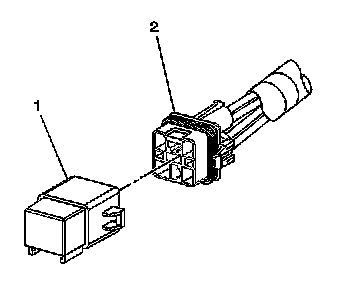

Relay Replacement (Attached to Wire Harness)
Relay Replacement (Attached to Wire Harness)
Removal Procedure

1. Locate the relay. Refer to the Master Electrical Component List (Component Locations) to locate the relay in the vehicle.
2. Remove any fasteners which hold the relay in place.
3. Remove any connector position assurance (CPA) devices or secondary locks.
Important: Use care when removing a relay in a wiring harness when the relay is secured by fasteners or tape.
4. Separate the relay (1) from the wire harness connector (2).
Installation Procedure
1. Connect the relay (1) to the wire harness connector (2).
2. Install any connector position assurance (CPA) devices or secondary locks.
3. Install the relay using any fasteners or tape that originally held the relay in place.